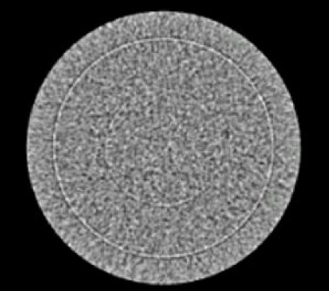
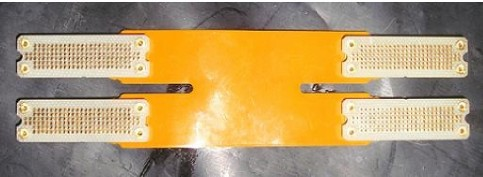
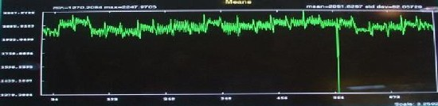
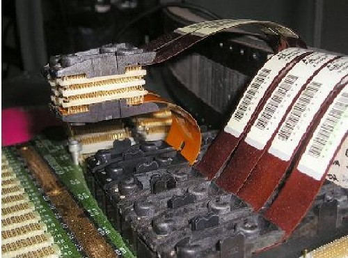
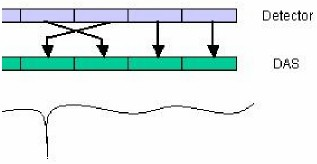
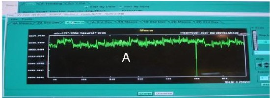
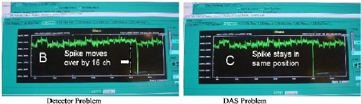

Operating Documentation
Direction 5196839-800, Rev# 6
RT16 and Xtra Service Info Adv
Operating Documentation |
| Required Persons | Preliminary Reqs | Procedure | Finalization |
|---|---|---|---|
| 1 |
This troubleshooting procedure and associated Service Tool is designed to be used on systems using the interposer design. This includes all MDAS 16-slice and GDAS 16-slice systems. It is intended to be used to troubleshoot rings ( Illustration 1) and isolate problems between the rings and the DAS or Detector.
Illustration 1: Typical Ring Artifact

| Last Revised: | 29 June 2007 |
| Item | Qty | Effectivity | Part# | Manufacturer | |
|---|---|---|---|---|---|
| Channel Crossover Tool (
Illustration 2) Illustration 2: Channel Crossover Tool  | 1 | - | 5118556 | - | |
| NOTE: | The tool will not work on a DAS that uses elastomers. (4 and 8 slice scanners). |
Use DASTools to locate the bad/noisy channel. (See Illustration 3.)
Illustration 3: DASTools Display of Typical Noise Spike

Physically remove the flex from the bad/noisy channel.
Physically remove the flex from an adjacent good channel.
Install one side of the Channel Crossover Tool to the Detector.
Install the other side of the Channel Crossover Tool to the DAS. (See Illustration 4 and Illustration 5.)
Illustration 4: Channel Crossover Tool Installed

Illustration 5: Channels Crossed Using the Crossover Tool

Use DASTools to see if bad channel moved, or stayed the same.
If the bad channel indication moved 16 channels, the problem is with the Detector
If the bad channel did not move, a DAS issue is indicated. Isolate the DAS issue. See Illustration 6 and Illustration 7.
Illustration 6: Display of Noise Spike in Original Data

Illustration 7: Results after Install of the Channel Crossover Tool

No finalization required.